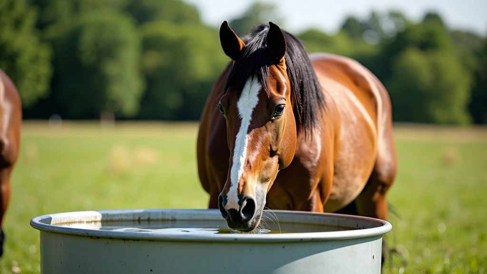
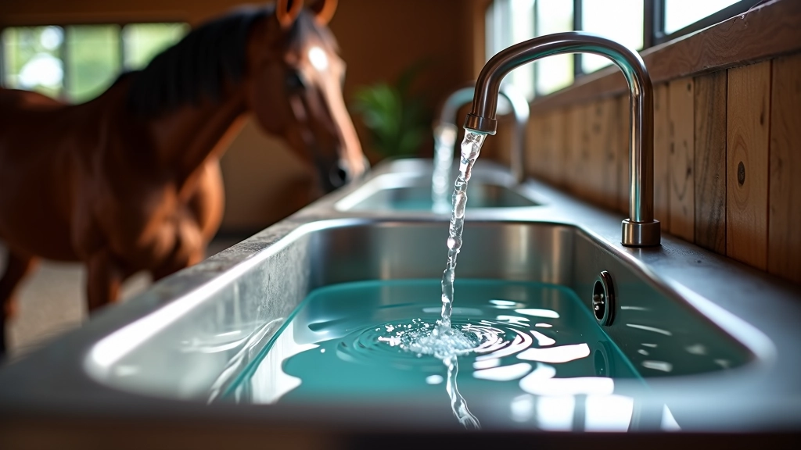
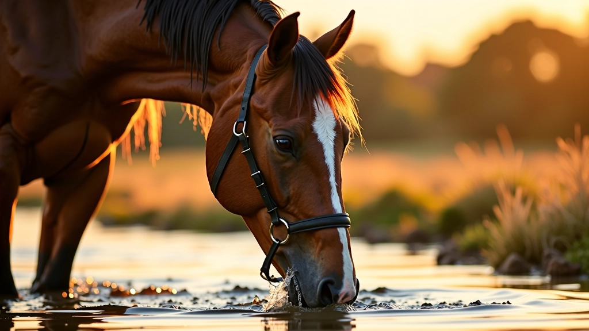
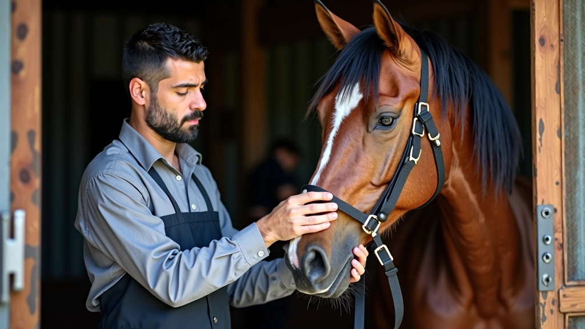

أهمية الماء والترطيب
الماء هو أساس حياة الخيل وصحته. نشرح أهمية الترطيب والكمية المناسبة من الماء لضمان أداء أفضل وصحة مثالية.

كتبه
فريق عطايا الخيل التحريري
فريق التحرير والمراجعة
من إعداد فريق عطايا الخيل التحريري، متخصصون في تقديم إرشادات عملية وموثوقة حول رعاية الخيل والاسطبلات.
لماذا الماء ضروري جداً؟
الخيل يحتاج إلى الماء بشكل يومي. حقاً، لا يمكن للخيل البقاء بدون ماء لأكثر من بضعة أيام. أجسام الخيول تحتوي على حوالي 65% من وزنها ماء، وهذا يعني أن الترطيب ليس خياراً اختيارياً — إنه ضروري للبقاء على قيد الحياة.
عندما يشرب الحصان كمية كافية من الماء، يحافظ على درجة حرارة جسده المناسبة، ينقل العناصر الغذائية، ويزيل الفضلات. كل هذا يحدث في الخلفية، لكنه أساسي تماماً لصحة الحصان.
الحقيقة المهمة: الخيل البالغ يحتاج إلى 20-55 لتراً من الماء يومياً، حسب الطقس والنشاط البدني.
كمية الماء الصحيحة
تختلف احتياجات الماء من خيل لآخر. الخيل النشط يحتاج إلى ماء أكثر من الخيل الذي يقضي معظم وقته في الحظيرة. الطقس الحار يزيد الحاجة بشكل كبير أيضاً.
إذا كان خيلك يتدرب بشكل مكثف أو يعيش في منطقة حارة، فقد يحتاج إلى 50 لتراً أو أكثر يومياً. خلال فصل الشتاء، قد تنخفض الحاجة قليلاً، لكن الخيل يحتاج دائماً إلى ماء نظيف وطازج في جميع الأوقات.
- خيل الراحة: 20-30 لتراً يومياً
- خيل التدريب الخفيف: 30-40 لتراً يومياً
- خيل التدريب المكثف: 40-55 لتراً يومياً
- الطقس الحار: أضف 10-15 لتراً إضافياً


نوعية الماء مهمة
لا يكفي فقط توفير الماء — يجب أن يكون الماء نظيفاً وطازجاً. الخيل يرفض شرب الماء الملوث أو الذي يحتوي على طعم غريب. هذا قد يبدو واضحاً، لكن الكثير من الناس لا يدركون أن جودة الماء تؤثر بشكل مباشر على كمية الماء التي يشربها الحصان.
نظف المسقى بانتظام — كل يوم أو يومين على الأقل. تأكد من عدم تراكم الطحالب أو الأوساخ. إذا كنت تستخدم خراطيم، افحصها للتأكد من أنها لا تنسرب أو تؤثر على طعم الماء.
نصيحة: جرب ماء الخيل بنفسك أحياناً. إذا كنت لا تريد شربه، فخيلك أيضاً قد لا يريده.
الترطيب والأداء الرياضي
الحصان الذي لا يشرب ماء كافياً لن يؤدي بأفضل ما لديه. قد تلاحظ أن خيلك يبدو كسولاً أو غير مهتم بالتدريب. هذا قد يكون علامة على عدم كفاية الترطيب.
عندما يتدرب الحصان، يفقد الكثير من الماء عن طريق العرق والتنفس. يجب أن توفر ماء طازج قبل التدريب وبعده. لا تعطِ الحصان كميات كبيرة من الماء مباشرة قبل التدريب الشديد — هذا قد يسبب عدم الراحة. بدلاً من ذلك، اسمح للخيل بشرب كميات صغيرة بانتظام.
نسبة الماء في جسم الخيل


علامات الجفاف عند الخيل
من المهم أن تتعرف على علامات الجفاف حتى تتمكن من التدخل مبكراً. إذا لاحظت أي من هذه الأعراض، فخيلك قد لا يشرب ماء كافياً.
- الغشاء المخاطي الجاف في الفم واللثة
- تقليل الشهية للعلف
- الإمساك أو تغييرات في الجهاز الهضمي
- الخمول والكسل غير المعتاد
- ضعف الأداء في التدريب
- جلد قاسي أقل مرونة
إذا رأيت هذه العلامات، تأكد من توفر ماء نظيف وطازج بكثرة. في بعض الحالات، قد تحتاج إلى استشارة طبيب بيطري.
نصائح عملية للترطيب الأمثل
إليك بعض الخطوات البسيطة التي يمكنك تطبيقها اليوم:
توفير ماء 24/7
اترك الماء متاحاً طوال الوقت. لا تحد من وصول خيلك للماء النظيف.
تنظيف المسقى يومياً
نظف المسقى كل يوم على الأقل. أزل أي طحالب أو شوائب.
تحقق من درجة الحرارة
في الطقس الحار، تحقق من المسقى بشكل متكرر. قد تحتاج إلى إضافة ماء أكثر.
راقب كمية الشرب
لاحظ كم يشرب خيلك. التغييرات المفاجئة قد تشير إلى مشكلة صحية.
اسمح بالراحة بعد التدريب
اترك الحصان يستريح 10-15 دقيقة قبل الشرب بكميات كبيرة بعد التمرين.
ماء في الحقل
إذا كان خيلك يقضي وقتاً في الحقل، تأكد من توفر ماء نظيف هناك أيضاً.
الخلاصة
الماء والترطيب ليسا موضوع معقد. الحقيقة البسيطة هي أن الخيل يحتاج إلى الماء النظيف والطازج طوال الوقت. عندما توفر ماء كافياً، يكون خيلك أكثر صحة وسعادة وأداءً أفضل.
ابدأ اليوم. تحقق من مسقى خيلك. تأكد من أن الماء نظيف. لاحظ كم يشرب خيلك. هذه خطوات صغيرة يمكنك اتخاذها الآن ستحدث فرقاً كبيراً في صحة وأداء حصانك على المدى الطويل.
ملاحظة مهمة: هذا المقال لأغراض معلوماتية فقط وليس استشارة بيطرية. يرجى استشارة طبيب بيطري مؤهل بشأن الاحتياجات الصحية المحددة لخيلك.